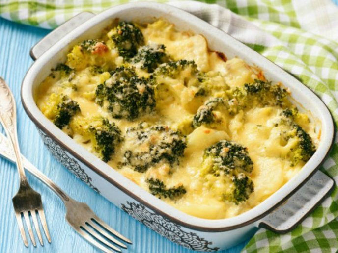

Bienvenido a nuestra sección de Alimentación, donde te brindamos información clave y consejos prácticos para mejorar tus hábitos alimenticios y llevar un estilo de vida más saludable. Creemos firmemente que la alimentación adecuada es la base para alcanzar tu mejor versión, optimizar tu energía y promover tu bienestar general.Nuestro objetivo es proporcionarte recursos y guías nutricionales elaboradas por profesionales en el campo de la dietética y la nutrición. Aquí encontrarás consejos sobre cómo equilibrar tu dieta, planificar comidas nutritivas y deliciosas, entender las necesidades específicas de tu cuerpo y tomar decisiones informadas sobre lo que consumes.
¡Juntos, lograremos superar tus límites y alcanzar un bienestar físico y mental óptimo!
Superavit Calorico
Entendemos que alcanzar tus objetivos de ganancia de peso y masa muscular de manera efectiva es crucial para muchos entusiastas del fitness. En esta sección, te proporcionaremos información detallada sobre cómo utilizar un superávit calórico estratégico para lograr tus metas de crecimiento muscular de manera segura y efectiva.
Un superávit calórico significa que consumes más calorías de las que tu cuerpo quema en un día determinado. Es una estrategia clave para el crecimiento muscular, ya que proporciona los recursos energéticos necesarios para desarrollar tejido muscular y fuerza. Sin embargo, es fundamental abordar este concepto de manera inteligente y equilibrada para evitar ganancias de grasa no deseadas.
- Aumenta tu Ingesta Calórica:
Calcula tu tasa metabólica basal (TMB) y añade calorías adicionales para crear un superávit calórico. Esto implica consumir más calorías de las que quemas a lo largo del día.
- Asegura Suficiente Proteína:
Consume suficiente proteína para apoyar el crecimiento y recuperación muscular. Idealmente, apunta a 1.6-2.2 gramos de proteína por kilogramo de peso corporal.
- Carbohidratos Complejos:
Incluye grasas saludables como palta, frutos secos, semillas y aceite de oliva. Estas son esenciales para la función hormonal y el bienestar general.
- Variedad de Verduras y Frutas:
Asegúrate de consumir una amplia gama de verduras y frutas para obtener vitaminas, minerales y antioxidantes esenciales para la salud y la recuperación.
- Aumenta la Ingesta de Calorías de Manera Gradual:
No aumentes drásticamente tus calorías de inmediato. Hazlo de forma gradual para evitar un exceso de grasa corporal. Un aumento de aproximadamente 250-500 calorías por día es un buen punto de partida.
- Come en Intervalos Regulares:
Realiza comidas cada 3-4 horas para mantener un flujo constante de nutrientes y energía a lo largo del día.
- Hidratación:
Mantente bien hidratado bebiendo suficiente agua a lo largo del día. La hidratación es crucial para el rendimiento óptimo y la salud en general. Importante siempre para entrenar tomar agua.
El descanso es crucial para la recuperación y el crecimiento muscular. Durante el sueño, se liberan hormonas esenciales para la reparación y el rendimiento. Prioriza 7-9 horas de sueño diario, descansa entre sesiones de entrenamiento, y escucha a tu cuerpo para evitar el sobreentrenamiento y lesiones. Opta por actividades de baja intensidad en días de descanso y mantente bien hidratado para una óptima recuperación. El descanso es un componente esencial para tu éxito en el fitness.

Deficit Calorico
El déficit calórico es una estrategia nutricional en la que consumes menos calorías de las que tu cuerpo necesita para mantener su peso actual. Esta diferencia energética provoca que tu cuerpo recurra a las reservas de grasa como fuente de energía, resultando en la pérdida de peso. Es fundamental para lograr la reducción de grasa corporal y alcanzar un peso saludable. Sin embargo, es importante mantener un equilibrio y asegurar que estés obteniendo los nutrientes esenciales para mantener tu salud durante este proceso.
- Cantidad de Déficit:
Para perder alrededor de 0.5-1 kg (1-2 libras) de grasa por semana de manera saludable, se necesita un déficit de alrededor de 500-1000 calorías por día.
- Equilibrio es Clave:
Es crucial mantener un equilibrio adecuado para evitar la pérdida de masa muscular y asegurar la ingesta de nutrientes esenciales.
- Proteínas:
Prioriza alimentos ricos en proteínas magras, como pechuga de pollo, pescado, claras de huevo, legumbres y tofu. La proteína ayuda a mantener la masa muscular durante la pérdida de peso.
- Vegetales sin almidón:
Llena la mitad de tu plato con verduras como espinacas, brócoli, pimientos y zanahorias. Son bajos en calorías pero ricos en nutrientes y fibra.
- Granos Integrales:
Opta por granos enteros como avena, quinua, arroz integral y pan integral. Son ricos en fibra y te ayudan a sentirte lleno por más tiempo.
- Grasas Saludables:
Incluye grasas saludables en tu dieta, como aguacates, nueces, semillas de chía, aceite de oliva y pescado graso. Son esenciales para la salud y saciedad.
- Hidratación:
Mantente bien hidratado bebiendo suficiente agua a lo largo del día. La hidratación es crucial para el rendimiento óptimo y la salud en general. Importante siempre para entrenar tomar agua.
- Frutas:
Consume frutas en moderación, prefiriendo aquellas con bajo contenido de azúcares como bayas, manzanas y peras. Proporcionan vitaminas y minerales importantes.
- Control de Porciones:
Sé consciente de las porciones y utiliza herramientas de medición para asegurarte de no exceder tu límite calórico diario.
- Evita Azúcares y Alimentos Procesados:
Limita el consumo de alimentos azucarados, golosinas y alimentos procesados ricos en calorías vacías.
El descanso es crucial para la recuperación y el crecimiento muscular. Durante el sueño, se liberan hormonas esenciales para la reparación y el rendimiento. Prioriza 7-9 horas de sueño diario, descansa entre sesiones de entrenamiento, y escucha a tu cuerpo para evitar el sobreentrenamiento y lesiones. Opta por actividades de baja intensidad en días de descanso y mantente bien hidratado para una óptima recuperación. El descanso es un componente esencial para tu éxito en el fitness.

Vegetariano/Vegano
La alimentación fitness centrada en la dieta vegana y vegetariana es una elección inteligente y ética que ofrece una gama amplia de opciones para apoyar un estilo de vida activo y saludable. Estas dietas se basan en alimentos integrales, ricos en proteínas vegetales, granos enteros, frutas, verduras y grasas saludables. Las proteínas se obtienen de fuentes como legumbres, tofu, quinoa y nueces, asegurando el crecimiento y recuperación muscular. Los carbohidratos complejos proporcionan energía duradera para entrenamientos intensos, mientras que las grasas saludables, como las de aguacate y frutos secos, mantienen un equilibrio nutricional esencial. Esta elección consciente no solo promueve la salud personal, sino que también respeta y protege nuestro entorno..
- Proteínas:
Fuentes vegetales: legumbres (lentejas, garbanzos, frijoles), tofu, tempeh, quinoa, seitan, guisantes, edamames, nueces y semillas.
- Carbohidratos Complejos:
Fuentes vegetales: granos enteros (arroz integral, avena, quinua, cebada), pan integral, pasta integral, batatas, frutas y verduras.
- Grasas Saludables:
Fuentes vegetales: paltas, nueces, almendras, semillas de chía, semillas de lino, aceite de oliva, aceite de linaza y aceite de coco.
- Verduras y Frutas:
Incluye una amplia variedad de colores y tipos para asegurar que estés obteniendo una gama completa de nutrientes y antioxidantes.
- Lácteos y Alternativas:
Si consumes lácteos, opta por opciones vegetarianas como yogur y queso bajo en grasa. Para veganos, existen alternativas a base de plantas como leche de almendra, soja o avena.
- Hidratación:
Bebe suficiente agua durante el día y considera incluir bebidas como té y agua de coco.